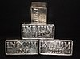

indium

Definition: Indium is a chemical element with the symbol In and atomic number 49. Indium is the softest metal that is not an alkali metal. It is a silvery-white metal that resembles tin in appearance. It is a post-transition metal that makes up 0.21 parts per million of the Earth's crust. Indium has a melting point higher than sodium and gallium, but lower than lithium and tin. Chemically, indium is similar to gallium and thallium, and it is largely intermediate between the two in terms of its properties. Indium was discovered in 1863 by Ferdinand Reich and Hieronymous Theodor Richter by spectroscopic methods. They named it for the indigo blue line in its spectrum. Indium was isolated the next year.
Source: Wikipedia
Wikipedia Page
Wikidata Page